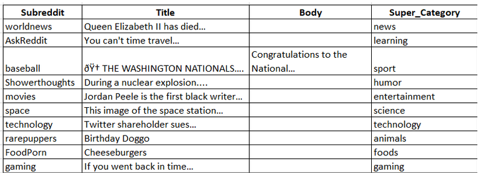
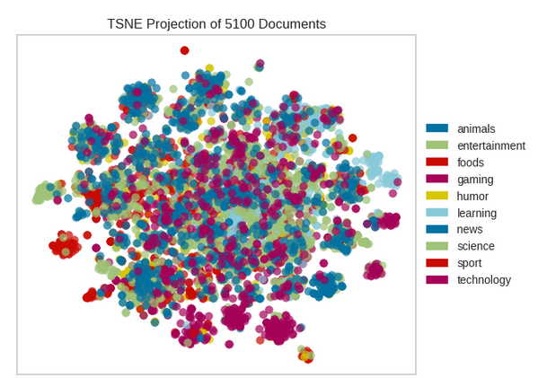

Reddit is a website for social news gathering and web content ranking. Registered users publish content to the site, such as links, text articles, and photographs, which are then rated positively or negatively by other users. Content is structured into user-created boards known as "subreddits" that cover a wide range of topics such as news, science, movies, video games, music, literature, fitness, food, and image-sharing. Users can also leave comments on posts and interact with other users. However, there is a fundamental issue linked with this continual flow of information: the difficulty in looking for and retrieving information. As humans, we are restricted in our ability to retain all of the information we encounter, making it difficult to recover information on the platform.Furthermore, the platform is designed to display postings in a dynamic order depending on user upvotes, downvotes, and other user-designated rewards. This layout makes it difficult to find and retrieve certain postings. To remedy this issue, a program that can identify the subreddit from which a post came and rank posts based on contextual relevancy would be useful. This might dramatically improve the recoverability and searchability of Reddit postings.
We did data scraping process that was conducted on 50 subreddits, resulting in the collection of the top 100 posts from each subreddit. Here is a screenshot of our subdata.
This is a machine learning project that can classify Reddit posts into their respective subreddits. The project is designed to take in a post's title and body as input and predict which subreddit the post belongs to. This project also aims to visualize the relationships between post embeddings using unsupervised Machine Learning techniques.
The project uses various statistical methods for text classification, including
1.Naive Bayes
2.Support Vector Classifier
3.KNeighborsClassifier
4.BaggingClassifier
5.ExtraTreesClassifier
6.RandomForestClassifier
7.LinearSVC
F1 scores for each model averaged over 50 iterations
1. Super-Catagories
| SVC | 0.3999999999999999 |
| LinearSVC | 0.7285714285714281 |
| KNeighborsClassifier | 0.43571428571428583 |
| MultinomialNB | 0.5857142857142855 |
| BaggingClassifier | 0.6664285714285713 |
| ExtraTreesClassifier | 0.7121428571428571 |
| RandomForestClassifier | : 0.6959999999999996 |
2.Categories (Subreddits)
| SVC | 0.142857142857143 |
| LinearSVC | 0.7071428571428564 |
| KNeighborsClassifier | 0.37142857142857155 |
| MultinomialNB | 0.5500000000000004 |
| BaggingClassifier | 0.6347142857142858 |
| ExtraTreesClassifier | 0.6997142857142856 |
| RandomForestClassifier | : 0.6759999999999997 |
3.Visualization

Possible future improvements to the project include:
Improving the pre-processing and cleaning of the dataset
Experimenting with other statistical methods for text classification
Implementing more advanced neural network architectures
Developing a web application or browser extension for easy use of the model.